[10-1] I2C通信协议 — 学习笔记
- 本集定位：这是模块 10（I2C）的理论课（上）——片头 3 分钟只演示两个成品工程的现象（①
10-1 软件I2C读写MPU6050②硬件 I2C 读写 MPU6050，效果相同），之后 48 分钟全是 PPT：设计背景（大公司四点要求）→ I2C 简介 → 硬件电路 → 6 个时序基本单元 → 3 种完整时序（含示波器实测波形） → 多字节进阶。本集没有写一行代码；片尾 50:54「下一小节我们来了解 MPU6050 这个芯片」——软件 I2C 代码在 [10-2]、硬件 I2C 在 [10-3]。本集未讲时钟频率 100k/400k、未讲校验/CRC（I2C 靠 ACK 保证），笔记不补。
一句话结论
I2C 的故事要从「单片机怎么用少量线读写外部模块的寄存器」讲起：串口（TX/RX 两线、异步全双工、无应答、点对点）能做，但大公司提了四点要求——① 全双工改半双工（删一根线、同一根线收发）② 增加应答机制（每发/收一个字节都要对方应答）③ 一根线挂多个模块（主机能点名与任一个通信、其余不干扰）④ 异步改同步（加一根时钟线，对时间要求不严、可暂停、易用软件模拟）。这就是 I2C（Inter IC BUS，Philips 开发的通用数据总线）：两根线 SCL（Serial Clock，串行时钟）+ SDA（Serial Data，串行数据），同步、半双工、带数据应答，支持一主多从（本课程用的模型）与多主多从（需总线仲裁+时钟同步，不作要求）；常见器件有 MPU6050（姿态）、OLED、AT24C02（存储）、DS3231（RTC）。硬件电路三条规定：① 所有设备的 SCL 连在一起、SDA 连在一起 ② 设备的 SCL 和 SDA 均配置成开漏输出 ③ 各加一个上拉电阻，约 4.7KΩ（SCL 主机可推挽、从机浮空/上拉输入，但实际都用开漏）。为什么必须开漏：SDA 是半双工、主机和从机都要在输入输出间切换，若切换时机不当出现「一个输出高、一个输出低」就会电源短路——所以禁止所有设备输出强上拉高电平，统一用开漏输出（输出低=强下拉、输出高=引脚浮空）+ 外置弱上拉电阻（弹簧与杆子模型：只许往下拉或放手，不许向上推，外置弹簧负责回弹高电平）。三大好处：① 杜绝电源短路 ② 开漏兼具输入输出、避免引脚模式频繁切换 ③ 线与——任一设备拉低则总线为低，全部放手才高，这正是多主机时钟同步与仲裁需要的（所以 SCL 也用开漏）。六个时序基本单元：起始条件（SCL 高电平期间 SDA 由高→低，之后主机拉低 SCL 占用总线；除起始/终止外每个单元都「低进低出」便于拼接）、终止条件（SCL 高电平期间 SDA 由低→高，之后回到全高空闲态）、发送一个字节（SCL 低电平期间主机把数据位依次放上 SDA，高位先行 B7→B0；释放 SCL 后从机在高电平期间读取；高电平期间 SDA 不许变化；循环 8 次；与串口相反——串口低位先行）、接收一个字节（SCL 低电平期间从机放数据、主机高电平读取；主机接收前必须先释放 SDA，否则线与一直被拽低、别人发不出去）、发送应答、接收应答（都是「发一位/收一位」，0 = 应答 ACK、1 = 非应答 NACK）。从机地址：7 位地址（另有 10 位，本节只讲 7 位）+ 1 位读写位 = 1 字节；同型号芯片可用引脚改低位——MPU6050 的 AD0（接低则 7 位地址 1101000，即写 0xD0/读 0xD1）、AT24C02 的 A0/A1/A2。三种完整时序：① 指定地址写：S + 0xD0（从机地址+W） + RA(0) + 0x19（寄存器地址） + RA(0) + 0xAA（数据） + RA(0) + P；② 当前地址读：S + 0xD1（地址+R） + RA(0) + 接收 1 字节（如 0x0F） + SA(1) NACK + P——因为读写位给 1 后下一字节必须立即转读、来不及指定读哪个寄存器，只能读「当前地址指针」指向的寄存器（上电默认指 0，每读写一个字节自动 +1），所以用得不多；③ 指定地址读（复合格式）：先在「写」模式下只发寄存器地址（不写数据）→ Sr 重复起始（切换读写方向必须重新起始）→ 再发「地址+R」→ 接收数据 → 主机发 NACK → P，也可「写地址→P→再起始读→P」两条时序但官方规定是整帧 S…Sr…P。进阶：多字节写/读就是把「发一字节+收应答 / 收一字节+发应答」重复多次，地址指针自增；读多字节时最后一个字节必须给 NACK，否则从机继续发、SDA 被拽住无法产生停止条件——「从机控制 SDA 发送数据的权利，开始于读写位为 1，结束于主机给非应答（SA=1）」。代码下一集开始写。
0. 本集定位：理论课（I2C 协议全解），代码在 10-2/10-3
- 本集是纯理论课：片头 3 分钟只演示两个已经写好的成品工程（软件 I2C / 硬件 I2C 读写 MPU6050，现象相同），03:00 起全程 PPT（设计背景 → 简介 → 硬件电路 → 6 个时序基本单元 → 3 种完整时序 → 多字节进阶），没有打开 Keil 写代码。
- 本集没有库函数/寄存器配置：STM32 的 I2C 外设（硬件 I2C）留到 [10-3] 讲。
- 本集未讲：时钟频率（100kHz/400kHz、标准/快速模式）、校验和/CRC（I2C 靠 ACK 位保证完整性）——本笔记不编造这两部分内容。
- 片尾 50:54：「下一小节我们来了解 MPU6050 这个芯片」——软件 I2C 读写的代码在 [10-2]。
1. 设计背景：从串口到大公司的四点要求
1.1 回顾串口
- 串口通信是一根发送线 TX、一根接收线 RX，异步、全双工，没有时钟线；数据流以字节为单位，可以组合多个字节变成多字节数据包。
1.2 任务：用少量线读写外部模块的寄存器
- 假设大公司出资一千万请你设计一个通信协议：公司做了一款芯片（可以 AD 转换、测温湿度、测姿态……），芯片内部众多设备都是通过读写寄存器来控制的，寄存器被分配到一个线性存储空间；
- 你的任务：在单片机和外部模块之间连接少量几根线，实现单片机读写外部模块寄存器的功能——至少要实现「在指定位置写寄存器」和「在指定位置读寄存器」，能读写寄存器就能完全控制这个模块。
1.3 第一版方案：串口 HEX 数据包
- 用串口的 HEX 数据包，定义 3 个字节的数据包：第 1 字节 = 读写标志（0 写 / 1 读）、第 2 字节 = 读写的寄存器地址、第 3 字节 = 写入的数据；
- 例如发
0x00, 0x06, 0xAA= 在 0x06 地址写入 0xAA；发0x01, 0x06, 0x00= 读取 0x06 地址的数据（第 3 字节无效），模块收到后再回一个字节； - 「是不是完美完成任务啊」——但大公司对协议的要求非常多。
1.4 大公司的四点要求
| # | 要求 | 动机 |
|---|---|---|
| 1 | 删掉一根通信线，只能在同一根线上发送和接收（全双工 → 半双工） | 我们整个操作是「对话」形式，并不需要同时收发，全双工是资源浪费 |
| 2 | 增加应答机制：每发送一个字节对方都要应答、每接收一个字节我也要给对方应答 | 原协议没有应答，单片机完全不知道对方收没收到，不安全 |
| 3 | 一根线上能同时接多个模块：主机可指定与任意一个通信，通信时其它模块不能干扰 | 一根线只接一个模块「不给力」 |
| 4 | 把异步时序改成同步时序（加一根时钟线） | 异步对传输速率要求严格、不能暂停、非常依赖硬件外设（必须有 USART 电路），难以软件模拟 |
- 同步时序的好处：多了时钟线后对时间要求不高——暂停传输时时钟线也暂停，双方都定格在暂停时刻，过一会再继续不会影响；所以没有硬件外设的低端单片机也能用软件模拟（51 单片机就没有 I2C 硬件外设）；
- 异步 vs 同步：异步省一根时钟线、但依赖硬件；同步对时间不严格、不依赖硬件、但要多一根时钟线；
- 通信协议的设计很灵活：只要实现项目要求、符合电路原理、性能和稳定性好就是好设计；推广开了就成了行业标准。
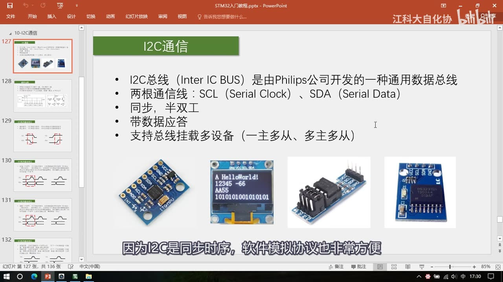
图 1：PPT「I2C通信」——I2C 总线（Inter IC BUS）是由 Philips 公司开发的一种通用数据总线；两根通信线 SCL（Serial Clock）、SDA（Serial Data）；同步、半双工；带数据应答；支持总线挂载多设备（一主多从、多主多从）；下方是 MPU6050、OLED、AT24C02、DS3231 四张器件图；字幕「因为I2C是同步时序，软件模拟协议也非常方便」
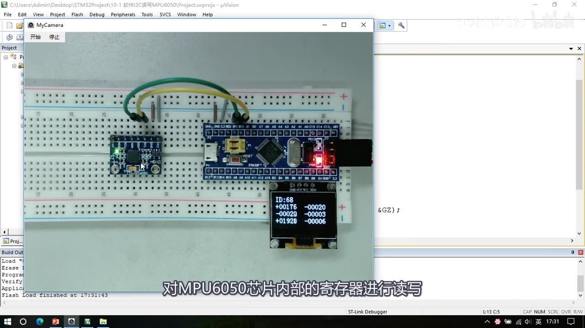
图 2：片头现象（工程 10-1 软件I2C读写MPU6050）——面包板上 MPU6050 模块与 STM32 通过 SCL/SDA 相连，OLED 显示 ID:68，下方是加速度 XYZ（左：+00176 / -00029 / +0192B）与角速度 XYZ（右：-00020 / -00003 / -00006）；字幕「对MPU6050芯片内部的寄存器进行读写」
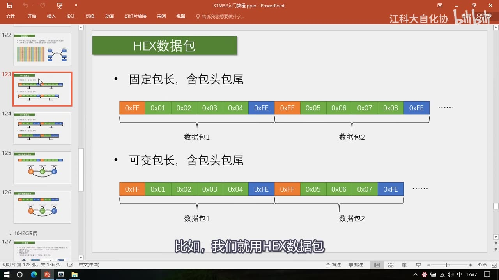
图 3：设计背景里「用 HEX 数据包也能完成任务」——PPT 复用串口章节的 HEX 数据包页（固定包长含包头包尾 / 可变包长含包头包尾）；字幕「比如，我们就用HEX数据包」
2. I2C 简介
- I2C（Inter IC BUS）：Philips 公司开发的一种通用数据总线，应用非常广泛；
- 两根通信线：SCL（Serial Clock，串行时钟线）、SDA（Serial Data，串行数据线）——使用 I2C 的器件都有这两个引脚；
- 特性：同步（SCL 满足要求 4）、半双工（一根 SDA 兼收发，满足要求 1）、带数据应答（满足要求 2）、支持总线挂载多设备（满足要求 3）；
- 常见 I2C 器件：MPU6050（姿态测量，本课程用它学 I2C）、OLED 模块（显示）、AT24C02（存储器，51 单片机教程用的就是它）、DS3231（实时时钟）；
- 同一协议在不同硬件上操作方法极为相似——学会一个，再学其它就很容易。
2.1 一主多从模型（本课程使用）
- 主机（单片机）：① 对 SCL 线有完全控制权（任何时刻都是主机掌控 SCL）；② 空闲状态下主动发起对 SDA 的控制；只有在从机发送数据和从机应答时，主机才把 SDA 控制权转交给从机；
- 从机（被控 IC）：① 对 SCL 只能被动读取，不允许控制 SCL；② 不允许主动发起对 SDA 的控制，只有在主机发送读取命令后或从机应答时，才能短暂取得 SDA 控制权；
- 比喻：老师（主机）主导课堂，学生（从机）可以同时被动听，但只有被点名后才能说话；
- 多主多从：总线上任何模块都可以主动「跳出来」当主机，同一时间只能一个说话（总线冲突）——I2C 会仲裁，胜者取得控制权、败者自动变回从机；多主机还要做时钟同步，协议复杂，本课程不作要求，只讲一主多从。
3. 硬件电路
3.1 接线与引脚模式
- 接线：所有 I2C 设备的 SCL 连在一起、SDA 连在一起（主机 SCL 一根线拽出来、所有从机 SCL 都接上；SDA 同理）；
- SCL 好办：一主多从下主机拥有 SCL 绝对控制权——主机 SCL 配推挽输出、从机 SCL 配浮空输入或上拉输入（数据流向：主机发、所有从机收）；
- SDA 麻烦：半双工，主机和从机的 SDA 都要在输入/输出之间切换；如果切换时机协调不好，可能出现两个引脚同时输出、一个出高一个出低 → 电源短路，必须极力避免。
3.2 规定：开漏输出 + 外置上拉电阻
- 禁止所有设备输出强上拉的高电平，统一采用开漏输出 + 外置弱上拉电阻；
- 三条规定：① 所有 I2C 设备的 SCL 连在一起、SDA 连在一起 ② 设备的 SCL 和 SDA 均要配置成开漏输出模式 ③ SCL 和 SDA 各添加一个上拉电阻，阻值一般 4.7KΩ 左右；
- 开漏输出原理：普通推挽是「上面一个开关管接正极、下面一个接负极」——上管导通输出高（强上拉）、下管导通输出低（强下拉）；开漏就是去掉上面那个强上拉开关管——输出低时下管导通，强下拉；输出高时下管断开、引脚浮空（什么都不接）；
- 所以开漏只能输出低电平、不能输出高电平——高电平由外置上拉电阻把总线拉高（弱上拉）；
- 弹簧与杆子模型：SCL/SDA 是一根杆子；规定所有人不许向上推杆子，只能往下拉或者放手，外面再挂一根弹簧往上拉——要输出低就往下拽（弹簧拽不赢，杆子为低）、要输出高就放手（弹簧把杆子拉回高电平）；「这就是一个弱上拉的高电平，但完全不影响数据传输」。
3.3 开漏 + 弱上拉的三大好处
- 完全杜绝电源短路，保证电路安全：所有人无论怎么拉/放手，杆子不会同时被强拉和强推，即使多个人同时往下拉也没问题；
- 避免引脚模式频繁切换：开漏 + 弱上拉同时兼具输入和输出功能——想输出就去拉杆子/放手；想输入就直接放手、观察杆子高低；开漏输出高电平相当于断开引脚，所以输入之前可以直接输出高电平，不需要再切换成输入模式；
- 线与：只要有任意一个或多个设备输出低电平，总线就是低电平；只有所有设备都输出高电平，总线才是高电平——I2C 利用这个特性做多主机模式下的时钟同步和总线仲裁；所以 SCL 虽然在一主多从下可以用推挽，仍然采用开漏+上拉（多主机模式要用到这个特征）。
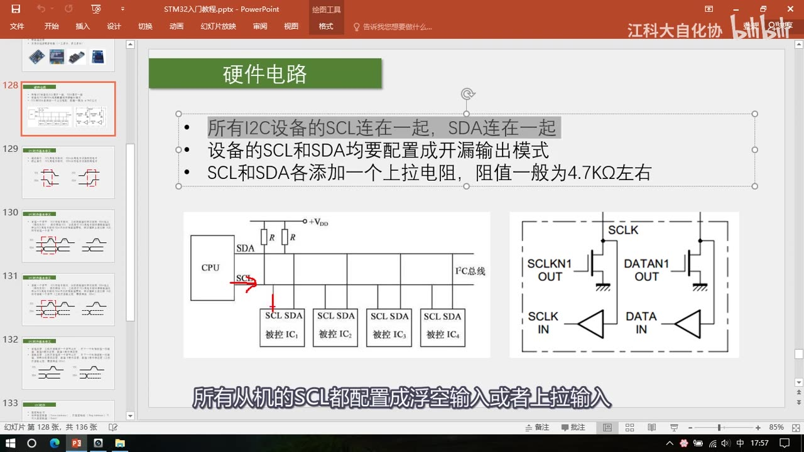
图 4：PPT「硬件电路」——三条规定（SCL 连一起 SDA 连一起；均配开漏输出；各加上拉电阻约 4.7KΩ）；下方左图是典型接线（CPU 的 SDA/SCL 引出 I²C 总线，挂 4 个被控 IC，总线经两个电阻接 +VDD），右图是引脚内部结构（SCLKN1 OUT / SCLK IN / DATAN1 OUT / DATA IN）；字幕「所有从机的SCL都配置成浮空输入或者上拉输入」
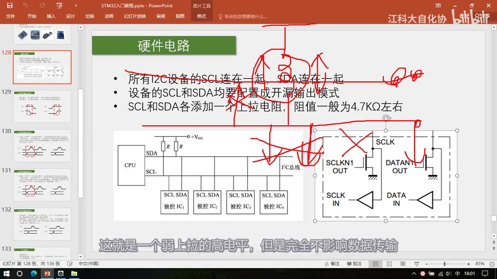
图 5：同一页上的红笔标注（讲开漏输出时）——把引脚内部结构里的强上拉开关管划掉、标出上拉电阻与 4.7K、圈住「开漏输出模式」；字幕「这就是一个弱上拉的高电平，但是完全不影响数据传输」
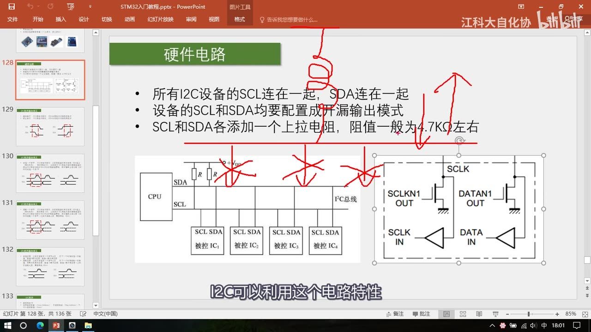
图 6：同一页上的红笔标注（讲线与）——从引脚内部结构指向上拉电阻，并标出「线与」；字幕「I2C可以利用这个电路特性」
4. 六个时序基本单元
I2C 在硬件（电路连接、引脚模式）和软件（时序定义、字节如何传输与拼接）两方面都做了规定；先学 6 个基本单元，再拼成完整数据帧。
4.1 起始条件与终止条件
- 起始条件：SCL 高电平期间，SDA 从高电平切换到低电平（产生下降沿）；
- 总线空闲时 SCL 和 SDA 都是高电平（没有任何设备碰总线，被上拉电阻拉高）；
- 主机要收发数据时，先「打破总线的宁静」：SCL 保持高、把 SDA 拽下来；
- 从机捕获到「SCL 高、SDA 下降沿」就自身复位、等待主机召唤；
- 之后主机再把 SCL 拽下来——一方面是占用总线，另一方面是为了拼接：除了起始和终止，每个时序单元都是「SCL 低电平开始、低电平结束」，这样拼起来 SCL 才续得上；
- 终止条件：SCL 高电平期间，SDA 从低电平切换到高电平（产生上升沿）——先放 SCL（回弹高）、再放 SDA（回弹高）；终止之后 SCL/SDA 都回到高电平的平静状态；
- 起始和终止都只能由主机产生，从机在总线空闲时必须「双手放开」，不能主动碰总线（否则就成多主机模型了，不在本节讨论范围）。
4.2 发送一个字节
- SCL 低电平期间，主机把数据位依次放到 SDA 上（高位先行 B7→B6→…→B0）；然后释放 SCL，从机在 SCL 高电平期间读取数据位；
- 所以 SCL 高电平期间 SDA 不允许有数据变化——低电平放数据、高电平读数据；
- 循环 8 次即发送一个字节：想发 0 就把 SDA 拉低，想发 1 就放手（回弹高）；
- 高位先行，与串口相反（串口是低位先行），注意区分；
- 同步时序的好处：如果主机发一半突然进中断、不操作 SCL/SDA，时序会在中断处不断拉长、电平暂停变化，等中断回来继续操作不会出错；
- 这个单元里 SCL 和 SDA 全程由主机掌控，从机只能被动读取。
4.3 接收一个字节
- SCL 低电平期间，从机把数据位依次放到 SDA 上（高位先行）；释放 SCL 后，主机在 SCL 高电平期间读取；同样高电平期间 SDA 不允许变化；循环 8 次即接收一个字节；
- 注意：主机在接收之前，必须先释放 SDA——释放 SDA 相当于「切换成输入」，也可以理解为所有设备始终处于输入模式，要发送时才主动拉低 SDA；
- 为什么必须释放：总线是线与特性，任何一个设备拉低总线就是低；接收时若还拽着 SDA 不放，别人无论发什么，总线都始终是低电平；
- 与发送字节的区别只有一句：发送是「低电平主机放、高电平从机读」，接收是「低电平从机放、高电平主机读」；
- 图上实线表示主机控制的电平、虚线表示从机控制的电平；SCL 全程由主机控制；因为时钟由主机控制，从机的数据变换基本都贴着 SCL 下降沿，而主机可在高电平任意时刻读取。
4.4 应答：发送应答与接收应答
- 发送应答：主机接收完一个字节之后，在下一个时钟发送一位数据——0 表示应答（ACK）、1 表示非应答（NACK）；
- 接收应答：主机发送完一个字节之后，在下一个时钟接收一位数据，判断从机是否应答——同样 0 应答、1 非应答；主机接收之前需要释放 SDA；
- 用法：**每调用「发送一个字节」，就要紧跟「接收应答」**判断从机收到没有——主机释放 SDA 后，从机若收到就会立刻把 SDA 拉下来，主机在高电平读：读到 0 = 有人应答、传输没问题；读到 1 = 没人拽住、没收到应答（可直接发终止条件并提示）；
- 每调用「接收一个字节」之后，也要给从机发应答位，目的是告诉从机还要不要继续发——从机得到应答就继续发；没得到应答（读到 1）就认为主机不要了，乖乖释放 SDA、交出控制权；
- 应答结束时的上升沿：从机要尽快在低电平期间变换数据，所以这个上升沿和 SCL 的下降沿几乎同时发生。
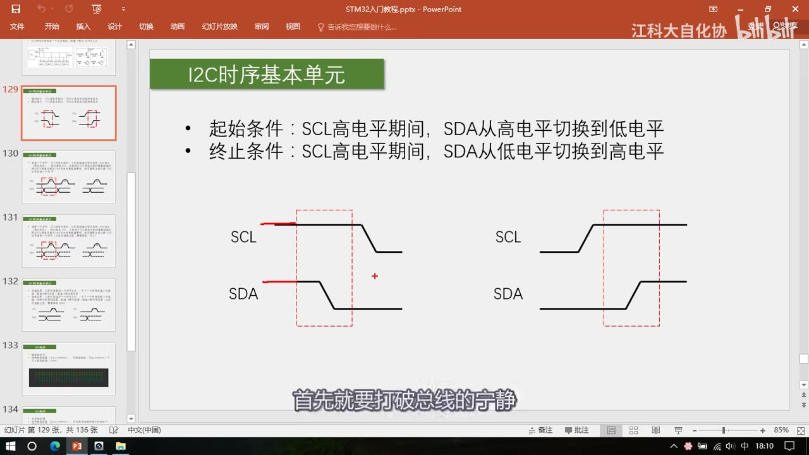
图 7：PPT「I2C时序基本单元」——起始条件：SCL 高电平期间 SDA 从高切换到低；终止条件：SCL 高电平期间 SDA 从低切换到高；下方两张波形（SCL 为长线、SDA 有跳变，红虚线框标出有效区间）；字幕「首先就要打破总线的宁静」
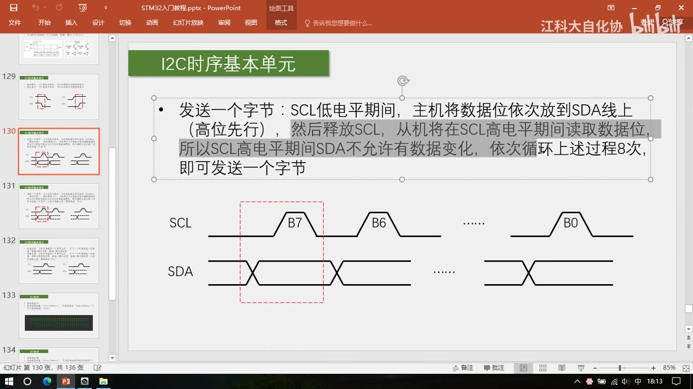
图 8：PPT「I2C时序基本单元」——发送一个字节：SCL 低电平期间主机把数据位依次放到 SDA（高位先行），然后释放 SCL，从机在高电平期间读取；所以 SCL 高电平期间 SDA 不允许有数据变化；循环 8 次即发送一个字节；下方波形依次标注 B7、B6 …… B0
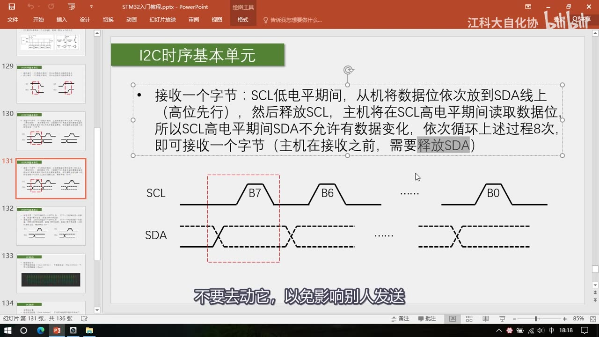
图 9：PPT「I2C时序基本单元」——接收一个字节：SCL 低电平期间从机把数据位依次放到 SDA（高位先行），主机在高电平期间读取；高电平期间 SDA 不允许变化；循环 8 次即接收一个字节（主机在接收之前，需要释放 SDA）；波形里 SDA 画成虚线（从机控制）；字幕「不要去动它，以免影响别人发送」
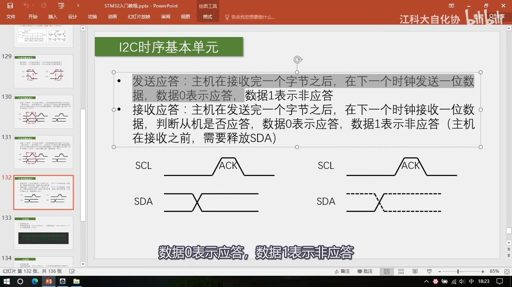
图 10：PPT「I2C时序基本单元」——发送应答：主机在接收完一个字节后、在下一个时钟发送一位数据，数据 0 表示应答、数据 1 表示非应答；接收应答：主机在发送完一个字节后、在下一个时钟接收一位数据，判断从机是否应答，0 应答/1 非应答（主机在接收之前需要释放 SDA）；下方是发送应答与接收应答两张 ACK 波形；字幕「数据0表示应答，数据1表示非应答」
5. 从机地址（7 位）
- 一主多从下主机要指定与谁通信，就要给每个从设备一个唯一的设备地址（相当于「名字」）；主机在起始条件之后，先发送一个字节叫一下从机的名字——所有从机都会收到并与自己的名字比较，不一样就不管，一样就响应后续读写；
- 同一条总线上设备地址必须不同，否则主机叫一个地址、多个设备响应就乱套了；
- 地址分 7 位和 10 位两种，本节只讲 7 位（简单、应用最广）；
- 厂商出厂时给每个 I2C 设备分配 7 位地址（具体值查芯片手册）；不同型号芯片地址一般不同，相同型号地址一样；
- 同型号芯片挂同一条总线怎么办：用地址里的可变部分——一般器件地址的最后几位可以在电路中改变；
- MPU6050：7 位地址 1101000，其中最后一位由板上的 AD0 引脚决定（AD0 接低电平 → 地址 1101000）；AT24C02：最后三位分别由 A0/A1/A2 引脚决定（接低=0、接高=1）；
- 一般 I2C 从机地址高位由厂商确定、低位可由引脚灵活切换——所以同型号芯片挂同一总线也能保证地址不重复；
- 配合读写位：写 = 地址左移后最低位补 0 → 0xD0；读 = 最低位补 1 → 0xD1。
6. 三种完整时序
6.1 指定地址写
- 任务：对指定设备（Slave Address），在指定地址（内部寄存器地址 Reg Address）下，写入指定数据（Data）；
- 时序：
S（起始）→ 发送 1 字节 = 从机地址 + 读写位 0 = 0xD0 → 接收应答 RA = 0 → 发送 1 字节 = 寄存器地址 0x19 → RA = 0 → 发送 1 字节 = 数据 0xAA → RA = 0 →P（终止）； - 逐位解读（示波器实测波形）：上面线是 SCL、下面线是 SDA；空闲时都是高电平；SCL 高电平期间拉低 SDA 产生起始条件 S；起始后必须紧跟「发送一个字节」，内容必须是「从机地址+读写位」（7 位地址 + 1 位读写位 = 8 位）——低位期间 SDA 换数据、高位期间从机读 SDA（图中绿线标出从机读到的数据）；高 7 位是地址（1101000 = MPU6050），最低位 0 表示接下来要写，高位先行拼成 16 进制就是 0xD0；
- 应答位：主机发送完必须紧跟「接收应答 RA」——主机释放 SDA（单看主机波形应回弹高），但从机在该位把 SDA 拉低，线与后 SDA 保持低电平，主机在高电平读到 0，就知道寻址有人应答、传输没问题；若读到 1 说明没人应答（可直接发停止条件）；
- 第二个字节：应答结束后继续发——第二个字节由从机自己定义用途（MPU6050 是寄存器地址、AD 转换器可能是指令控制字、存储器可能是存储器地址）；波形判读为
00011001= 0x19； - 第三个字节：再发一个字节 = 要写入的内容，波形为 0xAA；最后接收应答；如果不需要继续传，就产生终止条件 P（先拉低 SDA 为上升沿做准备，再放 SCL、再放 SDA）；
- 整帧含义：对地址 1101000 的设备，在其内部 0x19 地址的寄存器中写入 0xAA。
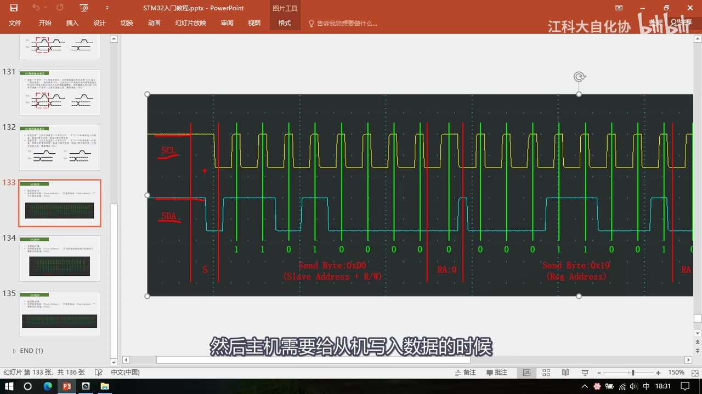
图 11：指定地址写的示波器实测波形（PPT 内嵌截图，SCL 黄线、SDA 青线，绿色竖线为逐位采样标注，红色竖线分隔各段）——标注 S、Send Byte: 0xD0 (Slave Address + R/W)、RA 0、Send Byte: 0x19 (Reg Address)、RA…；位值 1 1 0 1 0 0 0 对应 0xD0；字幕「然后主机需要给从机写入数据的时候」
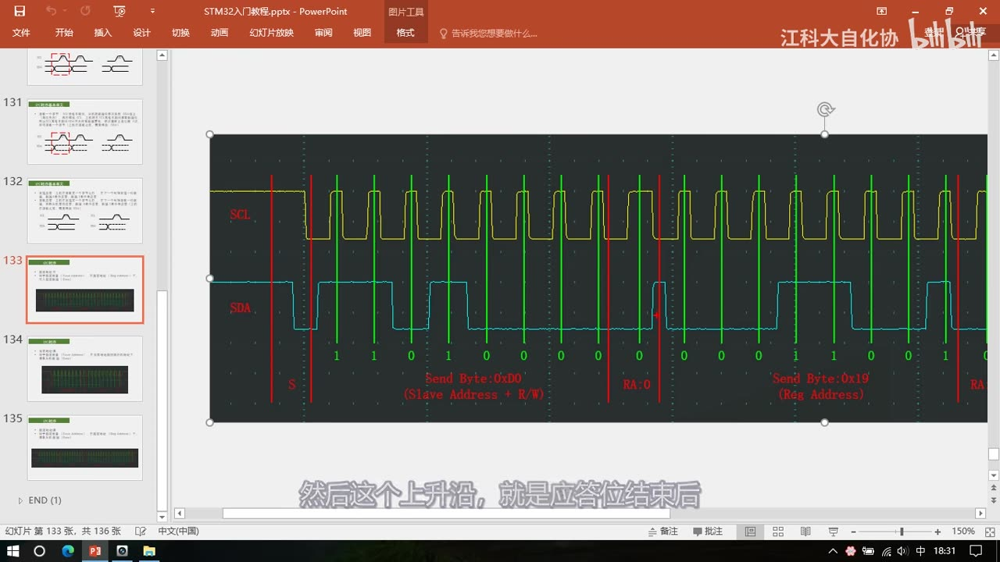
图 12：同一波形的应答位细节——红笔竖直箭头指向「应答位结束」处的 SDA 上升沿（从机释放 SDA、交出控制权，与 SCL 下降沿几乎同时）；字幕「然后这个上升沿，就是应答位结束后」
6.2 当前地址读（靠「当前地址指针」）
- 任务：对指定设备，在当前地址指针指示的地址下读取从机数据；
- 时序：
S→ 发送 1 字节 = 从机地址 + 读写位 1 = 0xD1 → RA = 0 → 接收 1 字节数据（如 0x0F） → 主机发非应答 SA = 1 →P； - 为什么没有「指定地址」环节：I2C 协议规定，主机寻址时一旦读写位给了 1，下一个字节就必须立刻转为读——主机来不及指定要读哪个寄存器，就得开始接收了；
- 那从机发哪个寄存器的数据？ 靠当前地址指针：从机内部有一个单独的指针变量，指向其中一个寄存器，上电默认一般指向 0 地址，每写入/读出一个字节，指针自动 +1 移到下一个位置；
- 所以调用「当前地址读」时，从机返回当前指针指向的寄存器值——例如刚在 0x19 写了 0xAA（指针 +1 到 0x1A），再调当前地址读，返回的就是 0x1A 的值；再调一次返回 0x1B 的值；
- 因为不能指定读的地址，这个时序用得不多。
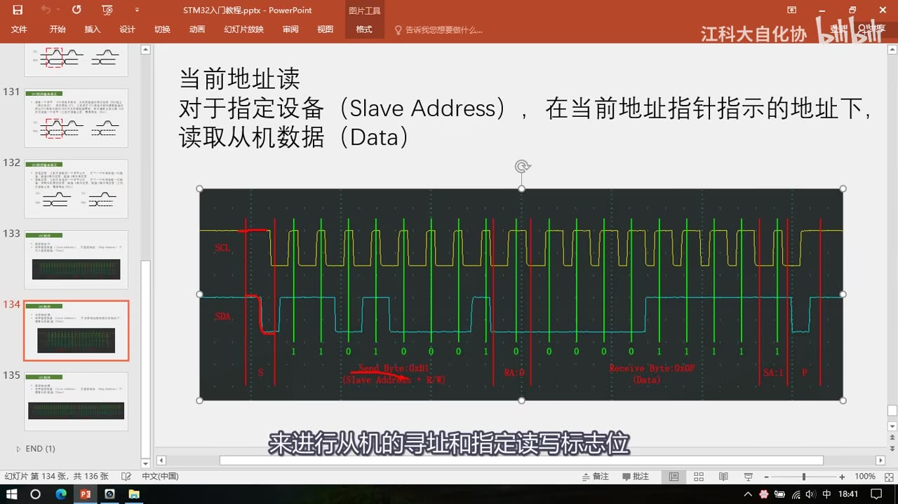
图 13：当前地址读的示波器波形——标题「当前地址读：对于指定设备（Slave Address），在当前地址指针指示的地址下，读取从机数据（Data）」；波形标注 S、Send Byte: 0xD1 (Slave Address + R/W)、RA 0、Receive Byte: 0x0F (Data)、SA 1、P；字幕「来进行从机的寻址和指定读写标志位」
6.3 指定地址读（复合格式，含重复起始 Sr）
- 任务：对指定设备，在指定地址下读取从机数据；
- 怎么来的：把指定地址写「最后的写数据部分去掉」，再把剩下的「只指定地址、还没写数据」的这一段，追加到当前地址读的前面——因为刚指定了地址（写进了从机的地址指针），所以再调用当前地址读，就是从指定地址读数据了；这种拼接叫复合格式；
- 时序：
S→ 0xD0（地址+W=0） → RA 0 → 寄存器地址 0x19（写进从机地址指针） → RA 0 →Sr（重复起始条件 Start Repeat） → 0xD1（地址+R=1） → RA 0 → 接收 1 字节（0x19 地址下的数据，如 0xAA） → SA = 1（NACK） →P； - 为什么必须重复起始：「指定读写标志位」只能是紧跟起始条件的第一个字节——所以想切换读写方向，只能再来一个起始条件 Sr，重新寻址并给读写位；
- 也可以分成两条时序：
写地址 → P，再起始 → 读当前位置 → P——因为写入的地址存在地址指针里，不会因为停止条件而消失；但 I2C 官方规定的复合格式是一整帧（S…Sr…P）； - 用的最多的是「指定地址写」和「指定地址读」，也是本节后续代码要用的时序。
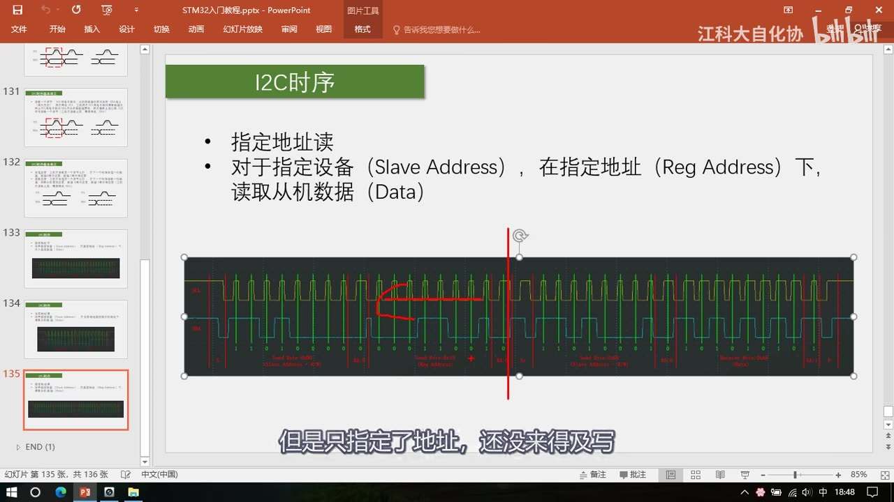
图 14：PPT「I2C时序」——指定地址读：对于指定设备（Slave Address），在指定地址（Reg Address）下，读取从机数据（Data）；下方是整帧实测波形，红笔在中间画竖线分隔，前段只指定地址、后段读数据；字幕「但是只指定了地址，还没来得及写」
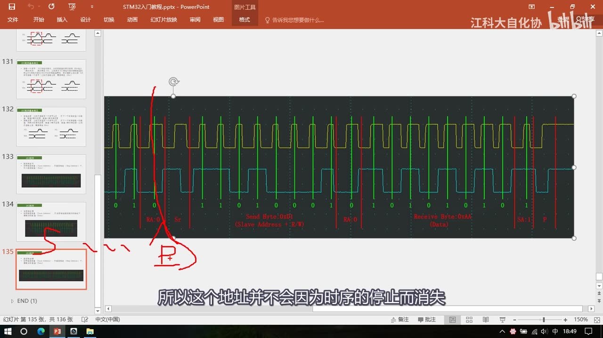
图 15：指定地址读波形放大——标注 RA 0、Sr（红笔）、Send Byte: 0xD0 (Slave Address + R/W)、RA 0、Receive Byte: 0xAA (Data)、SA 1、P；字幕「所以这个地址并不会因为时序的停止而消失」
7. 进阶：多字节读写与「最后一字节 NACK」
- 这三种时序都只写/读 1 个字节，进阶版本是写多个字节、读多个字节，时序非常相似，只需加小细节；
- 多字节写：在「指定地址、然后写入一个字节」之后不停止，把最后那部分「发送一个字节 + 接收应答」重复多次——因为地址指针每写一个字节自动 +1，所以第 1 个数据写到 0x19、第 2 个写到 0x1A、第 3 个写到 0x1B……在一条数据帧里连续写入多个寄存器，效率更高；
- 多字节读：同理，把「接收一个字节 + 发送应答」重复多次，指针自增，就能连续读出一片区域的寄存器；
- 关键注意：如果只想读一个字节就停止，读完一个字节后一定要给从机发「非应答」（SA = 1）——非应答就是「该主机应答的时候，主机不把 SDA 拉低」，从机读到 SDA 为 1 就知道主机不要了，会释放总线、把 SDA 控制权交还主机；
- 如果主机读完还给了应答，从机就会认为主机还要数据、继续发——这时主机想产生停止条件，SDA 可能被从机拽住、无法正常回弹高电平；
- 所以读多字节时：之前所有字节都给应答，最后一个字节给非应答；
- 总结一句：从机控制 SDA 发送数据的权利，开始于读写位为 1，结束于主机给应答为 1（非应答）——主机给应答就继续发，给非应答就交出控制权。
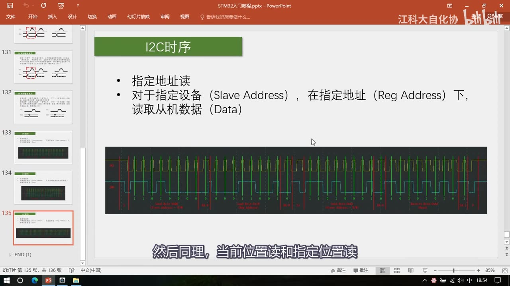
图 16：PPT「I2C时序」——同一页的小尺寸整帧波形（讲多字节进阶时），可见 Sr、Send Byte: 0xD0、RA 0、Receive Byte、SA 1、P 等分段；字幕「然后同理，当前位置读和指定位置读」
8. I2C 与 USART 对比
| 对比项 | USART（串口） | I2C |
|---|---|---|
| 线数 | TX、RX 两根通信线（+ GND） | SCL、SDA 两根线 |
| 同步方式 | 异步（无时钟线） | 同步（SCL 时钟线） |
| 双工 | 全双工 | 半双工（一根 SDA 兼收发） |
| 应答 | 无（靠协议/校验，本课程协议无应答） | 每字节带应答位 |
| 位数顺序 | 低位先行（LSB first） | 高位先行（MSB first，B7→B0） |
| 拓扑 | 点对点 | 一主多从 / 多主多从（需设备地址寻址） |
| 电气 | 推挽输出为主 | 开漏 + 上拉电阻（4.7KΩ），线与 |
| 软件模拟 | 困难（异步对时间要求严） | 容易（同步、可暂停） |
坑与易错点
- I2C 是高位先行（B7→B0），串口是低位先行——写代码/看波形时别搞反。
- SCL 高电平期间 SDA 不许变化：数据只能在 SCL 低电平期间改变，否则会被当成起始/终止条件。
- 起始/终止条件只能在 SCL 高电平期间由 SDA 跳变产生：SCL 高时 SDA 下降 = 起始，SCL 高时 SDA 上升 = 终止。
- 每个基本单元「低进低出」：除起始/终止外，单元开始和结束时 SCL 都是低电平，这样才能无缝拼接。
- 主机接收（或接收应答）之前必须释放 SDA：否则线与把总线拉死，从机发什么都读不到。
- 开漏只能输出低、不能输出高：高电平靠上拉电阻；别把 SCL/SDA 配成推挽输出（会有电源短路风险）。
- 应答位 0 = ACK、1 = NACK（反直觉，0 才是应答）。
- 读多字节时最后一个字节必须 NACK：否则从机继续发、SDA 被拽住，停止条件无法正常产生。
- 读写位切换必须重新起始（Sr）：读写位只能紧跟起始条件，不能中途改。
- 「当前地址读」不能指定地址：它读的是当前地址指针（上电默认 0、每读写一个字节 +1）指向的寄存器，所以用得少。
- 7 位地址 + 读写位 = 1 字节：MPU6050 = 1101000，写 0xD0 / 读 0xD1（最低位是读写位，不是地址的一部分）。
- 同型号芯片要改地址低位：MPU6050 改 AD0、AT24C02 改 A0/A1/A2，否则同一总线地址冲突。
- 应答位的上升沿和 SCL 下降沿几乎同时：从机要尽快在低电平期间换数据，抓波形时别以为这是异常。
- 同步总线可以「暂停」：中途进中断拉长时序不会出错——这是同步相对异步的关键优势。